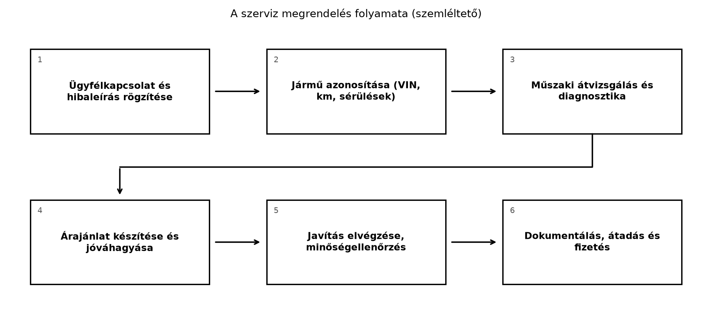

Egy szervizben ugyanaz a szakmai munka lehet kiváló vagy elfogadhatatlan a teljes ügyfélélménytől függően. Képzeld el, hogy a tanuló a vizsga előtti komplex hibakeresési feladatban egy jármű diagnosztikáját önállóan elvégzi. A feladat nem csupán a hiba megtalálása, hanem az is, hogy a vizsgadokumentációban – a munkalapon és az árajánlaton – pontosan, nyomon követhetően rögzíteni tudja a tünetet, az elvégzett méréseket, a javasolt javítást és annak költségét. Ugyanez a helyzet a műhelyben, amikor egy ügyfél „furcsa kopogást” hall, de nem tudja pontosan leírni: a jól felvett munkalap és a tudatos kommunikáció dönti el, hogy a hibakeresés célzott lesz-e, vagy a szerelő órákig találgat. A fogyasztóvédelemi és jótállási szabályok nem jogászkodás, hanem a tisztességes szerviz mindennapi kerete: aki nem ismeri őket, könnyen ad félreérthető ígéretet, rosszul dokumentálja a pótmunkát, vagy elmulasztja a kötelező tájékoztatást, amiből később panasz és bizalomvesztés lesz. Ebben az alfejezetben azt tanulod meg, hogyan kell egy javítási megrendelést felvenni, árajánlatot készíteni, a fogyasztó jogait értelmezni, és a panaszokat kezelni.
Képzeld el a munkafelvételi pultot: a tanácsadó laptopja előtt nyitva egy elektronikus munkalap, mellette a jármű kulcsa. A munkalap fejlécében szerepel a műhely neve, címe, adószáma, telefonszáma. Alatta a jármű adatai: rendszám (hatósági jelzés), alvázszám (VIN), forgalmi engedély szerinti tulajdonos és üzembentartó, kilométeróra-állás, üzemanyagszint, külső sérülések jelölése egy karosszéria-vázlaton. A hibaleírás mezőben az ügyfél szavait idézve: „Hidegindítás után 2-3 másodpercig csörög, aztán elmúlik; meleg motornál nem jelentkezik.” A tanácsadó kiegészíti a saját kérdéseivel: mikor jelentkezik, milyen fordulatszámon, van-e hibajelző lámpa, történt-e mostanában szerviz? Ezután közösen megállapodnak a diagnosztikai díjban, és a tanácsadó beírja: „Diagnosztika: tünet reprodukálása, hibakód kiolvasása, vezérléslánc ellenőrzése – 1,2 munkaóra.” A munkalap alján az ügyfél aláírja, hogy a megbízást adja, a megadott adatok valósak, és a vizsgálati díjat akkor is elfogadja, ha a javítást végül nem rendeli meg. Ez a dokumentum a teljes folyamat gerince.
Az alábbi folyamatábra a munkafelvételtől az átadásig mutatja a lépéseket:

A folyamat minden lépésénél fontos a nyomon követhetőség: később a munkalap és az árajánlat szolgál bizonyítékul arra, hogy mi hangzott el, mit hagyott jóvá az ügyfél, és mit végzett el a műhely. Ezt az elvet építjük be a Vizsgafelkészülés alfejezetbe is, ahol a komplex gyakorlati feladat dokumentációs részét is hasonló struktúrában kell majd elkészíteni.
Definíció. Fogyasztó. A fogyasztóvédelmi szabályozás szerint fogyasztó az a természetes személy, aki a szakmája, önálló foglalkozása vagy üzleti tevékenysége körén kívül jár el. A szerviz ügyfele tipikusan fogyasztó, ha a saját személygépkocsiját javíttatja magáncélból. Ha viszont egy cég javíttatja a futó járművét, általában nem fogyasztói jogviszonyról van szó, hanem két vállalkozás közötti szerződésről. (ellenőrizendő: a fogyasztó fogalmának pontos meghatározása a hatályos fogyasztóvédelmi törvényben és az EU-s irányelvekben.)
Definíció. Vállalkozás. A fogyasztóvédelmi szabályok szerint vállalkozás az, aki a saját nevében vagy javára gazdasági tevékenységet folytat. A szerviz, függetlenül attól, hogy egyéni vállalkozó, betéti társaság vagy kft., a fogyasztóval szemben vállalkozásnak minősül, ezért a fogyasztóvédelmi kötelezettségek őt terhelik.
Definíció. Szolgáltatás és termék. A szerviztevékenység jellemzően vegyes: a munka elvégzése szolgáltatás, a beépített alkatrész pedig termék. A hiba típusától függ, hogy a jótállási vagy szavatossági szabályok a termékre, a szolgáltatásra vagy mindkettőre vonatkoznak. Az alkatrész értékesítése és beszerelése egy szerződésbe tartozik, ezért a jogkövetkezmények is együtt kezelendők.
Definíció. Ár és egységár. Az ár a termék vagy szolgáltatás ellenértéke. Az egységár a termék egy mennyiségi egységére (például 1 liter motorolaj, 1 munkaóra) vetített ár. A fogyasztóvédelmi szabályok előírják, hogy a fogyasztó számára egyértelműnek kell lennie, mennyit fizet összesen, és ahol releváns, mennyi az egységár. (ellenőrizendő: az árfeltüntetésre vonatkozó hatályos hazai és uniós előírások.)
Definíció. Jótállás. A jótállás a szerződés teljesítéséért való helytállás, amelyet a vállalkozás jogszabály alapján vagy önként vállal. A jótállás alatt a hibás teljesítésért a vállalkozás akkor is felel, ha a hibát nem ő okozta, feltéve, hogy a hiba nem a fogyasztó hibájából keletkezett. A jótállás tehát szigorúbb, mint a szavatosság. (ellenőrizendő: a jótállás pontos időtartama és feltételei a hatályos fogyasztóvédelmi és Ptk. szabályok szerint módosulhatnak.)
Definíció. Szavatosság (kellékszavatosság). A szavatosság a szerződésszerű teljesítés követelményéből fakadó helytállás. Ha a szolgáltatás vagy termék hibás, a fogyasztó elsősorban kijavítást vagy kicserélést kérhet, ha pedig ez nem lehetséges vagy aránytalan, árleszállítást vagy elállást. A vállalkozás a teljesítéskor fennálló hibáért felel; fogyasztói szerződésnél a teljesítéstől számított egy éven belül felismert hibáról vélelmezni kell, hogy már a teljesítéskor megvolt. (ellenőrizendő: Ptk. 6:157–6:158. §, és azok értelmezése javítási szolgáltatásnál.)
Összefüggés. Nyomon követhetőség. A munkalap, a hibaleírás, a diagnosztikai jegyzőkönyv, az árajánlat és az ügyfél jóváhagyása együtt alkotják azt a dokumentációs láncot, amelyből utólag rekonstruálható, mi volt a megbízás tartalma. Ez a lánc védi az ügyfelet és a szervizt is: vita esetén ebből derül ki, hogy volt-e pótmunka-jóváhagyás, milyen hibát rögzítettek, és mennyi volt a közölt ár.
Szabály. Első benyomás és megszólítás. A munkafelvétel az ügyfél megszólításával kezdődik. A hivatalos magyar gyakorlatban természetes személy esetén a „Jó napot kívánok!” mellett a „hölgyem/uram” vagy a névvel történő megszólítás elfogadott; cég esetén a kapcsolattartó nevét és beosztását használjuk. A tegezés csak akkor megengedett, ha az ügyfél egyértelműen kezdeményezte. A bemutatkozásnál elmondjuk a keresztnevünket és a szerepünket: „Kovács Péter vagyok, gépjármű-átvevő tanácsadó. Miben segíthetek?”
Példa. Telefonos ügyfélkapcsolat. A telefonos megkeresésnél a szerviz nevét, a saját nevet és a segítőkészséget elsőként közöljük: „Jó napot kívánok! XY Autószerviz, Kovács Péter. Hogyan segíthetek?” A hívás közben jegyzeteljük a jármű adatait, a tünetet, az ügyfél elérhetőségét. A hívás végén összefoglaljuk a megállapodást: „Tehát holnap reggel 8-ra hozza a járművet, diagnosztikát kérünk, a vizsgálati díj bruttó 19 050 Ft (15 000 Ft + 27% áfa), ezt készpénzben vagy kártyával rendezheti.” Ezután megkérdezzük, van-e kérdése.
Szabály. Írásbeli kommunikáció. A hivatalos levél és az e-mail a szerviz ügyviteli kommunikációjában akkor használatos, amikor az ügyfélnek írásbeli tájékoztatást, árajánlatot, panaszválaszt vagy emlékeztetőt küldünk. A levél formája: fejlécben a szerviz adatai, jobbra a dátum, balra az ügyfél neve és címe, majd a tárgy. A megszólítás: „Tisztelt Ügyfelünk!” vagy „Tisztelt Kovács Úr!”. A zárás: „Tisztelettel: …”. Az e-mailben ugyanaz a szakmai hangnem, de rövidebb formában; a tárgy mindig beszédes legyen, például „Árajánlat a WX-123 rendszámú jármű fékjavítására”.
Szabály. Elektronikus kommunikáció és képek. Az ügyfél gyakran küld fényképet vagy videót a hibáról (például a hibajelző lámpáról, a kopott gumiabroncsról). Ilyenkor a kép a hibaleírás kiegészítése, de nem pótolja a jármű személyes átvizsgálását. Az elektronikus csatornán kapott adatokat a munkalaphoz csatoljuk, és rögzítjük a beérkezés időpontját. A GDPR-ra (adatvédelem) figyelve a képeket csak a megbízás céljához szükséges mértékben tároljuk, és nem osztjuk meg harmadik féllel, kivéve ha az ügyfél ehhez hozzájárult. (ellenőrizendő: a GDPR és a hazai adatvédelmi törvény aktuális rendelkezései.)
Gyakorlat. Munkafelvétel lépései. A munkafelvétel nem űrlapkitöltés, hanem interjú. A tanácsadó nyitott kérdésekkel deríti ki a tünetet, majd zárt kérdésekkel szűkíti a lehetséges okokat. A jármű átadásakor az alábbiakat mindig rögzítjük:
Szabály. Hiba leírása. A hibaleírást az ügyfél szavaival, idézőjelben rögzítsük, utána a tanácsadó kiegészítő megfigyeléseivel. Például: „Ügyfél szerint: ‘hidegindítás után rövid ideig csörög, utána megszűnik’. Tanácsadó kérdései alapján: a csörgést indítás után 2–3 másodpercig hallja, meleg motornál nem; nem jár együtt hibajelzővel.” A tünet pontos rögzítése azért fontos, mert a szerelő ebből indul ki, és később a diagnosztikai eredményt ezzel a kiindulási leírással vetjük össze.
Előírás. Munkalap kötelező tartalma. A fogyasztóvédelmi és vállalkozási szabályok szerint a szolgáltatás nyújtása során a vállalkozásnak egyértelmű tájékoztatást kell adnia a szolgáltatás díjáról, és a munka megkezdése előtt meg kell állapodnia az ügyféllel a díjról vagy annak számítási módjáról. A munkalap akkor megfelelő, ha tartalmazza a felek azonosító adatait, a jármű azonosítását, a megbízás tárgyát, az árat vagy az árképzés módját, és az ügyfél aláírását. (ellenőrizendő: a fogyasztóvédelmi törvény és a Ptk. vállalkozási szerződésre vonatkozó szabályai.)
Definíció. Árajánlat. Az árajánlat a szerviz által az ügyfélnek adott, a javítás várható költségét tartalmazó írásbeli vagy szóbeli nyilatkozat. Az árajánlat általában tartalmazza a munkaórák számát és a munkaóradíjat, az alkatrészek listáját és árát, a segédanyagokat, a környezetvédelmi díjakat, valamint az áfát. A kiállított árajánlatot az ügyfél elfogadhatja, módosítást kérhet vagy elutasíthat.
Szabály. Pótmunka jóváhagyása. Ha a javítás közben olyan hibát találunk, amely a megbízásban nem szerepelt, azt az ügyféllel jóvá kell hagyatni, mielőtt elvégeznénk. A pótmunka jóváhagyása történhet telefonon, e-mailben vagy írásban; a jóváhagyás tényét a munkalapra fel kell jegyezni időponttal és a jóváhagyó személy nevével. Ha az ügyfél nem érhető el, a pótmunkát nem végezzük el, hanem a járművet a megbízás szerint készítjük el, és a további hibát átadáskor jelezzük.
Számítás. Munkaóra- és alkatrész-kalkuláció. A javítási költség kalkulációjánál a munkaórák számát a gyártói javítási idők, vagy a műhelyben alkalmazott munkaidő-nyilvántartás alapján határozzuk meg. A munkaóradíj a műhely ára, amelyet a műhely szabályzata rögzít. Az alkatrész-árat a beszerzési ár + árrés adja. A kalkuláció lépései:
A végső árban az áfát a hatályos adómérték szerint tüntetjük fel. Az árajánlatot mindig nettó és bruttó összeggel, valamint az áfa mértékével írjuk ki. (ellenőrizendő: az aktuális áfa-mértékek, mert azok jogszabályban változhatnak.)
Előírás. Árfeltüntetés. A fogyasztói árakat bruttó összegben kell feltüntetni. A szervizben a munkaóradíjat, a diagnosztikai díjat és az alkatrészek fogyasztói árát jól láthatóan, egyértelműen ki kell írni. Ha az árajánlattól eltérő végösszeg várható, az ügyfelet a lehető leghamarabb tájékoztatni kell. (ellenőrizendő: az árfeltüntetési kötelezettség pontos jogszabályi hivatkozása.)
Előírás. A fogyasztó jogai. A fogyasztót megilleti a szerződésszerű teljesítéshez való jog. Ha a szerviz hibásan teljesít (például a hiba nem szűnt meg, a beépített alkatrész hibás, vagy a javítás során sérült a jármű), a fogyasztó a következő jogokkal élhet: elsődlegesen kijavítást vagy kicserélést kérhet; ha ez nem lehetséges, árleszállítást kérhet vagy elállhat a szerződéstől. A szolgáltatás jellege miatt a kijavítás az elsődleges, a kicserélés a termékre (alkatrészre) értelmezhető. (ellenőrizendő: a Ptk. és a fogyasztóvédelmi törvény szerinti pontos jogkövetkezmények, különös tekintettel a vállalkozási szerződésre.)
Előírás. Jótállás és szavatosság időtartama. Az új alkatrészekre a jótállás jellemzően a hatályos rendelet szerinti időtartam, de ennek pontos hossza termékkörönként eltérhet. A gépjármű javítására – ha a díj a rendeletben meghatározott összeget meghaladja – kötelező jótállás vonatkozik (ellenőrizendő: 249/2004. (VIII. 27.) Korm. rendelet: időtartam, díjhatár, jótállási jegy/munkalap tartalma); emellett a szavatossági jogok is fennállnak. Fontos, hogy a jótállási határidő a termék átadásától, a szavatossági határidő a teljesítéstől számít, de a pontos időtartamokat a mindenkori jogszabály határozza meg. (ellenőrizendő: a jótállási és szavatossági időtartamok, a jótállási jegy tartalmi követelményei, valamint a hibás teljesítés vélelme körüli szabályok.)
Szabály. Panaszkezelés és békéltető testület. Ha az ügyfél panaszt tesz, a szerviznek a panaszt jegyzőkönyvbe kell vennie, és írásbeli választ kell adnia a jogszabályban meghatározott határidőn belül. A panaszkezelés folyamata: a panasz rögzítése, a hiba megvizsgálása, a megoldási javaslat megtétele, és ha az ügyfél nem fogadja el, tájékoztatni kell a békéltető testülethez fordulás lehetőségéről. A békéltető testület egy ingyenes, bíróságon kívüli vitarendezési fórum, amely a fogyasztói jogvitákban segíti az egyezséget. (ellenőrizendő: a panaszkezelésre és a békéltető testületre vonatkozó hatályos jogszabályi előírások, különösen a határidők és a testület illetékességi szabályai.)
Előírás. Adatvédelem. A szerviz ügyfél- és járműadatait csak a megbízás teljesítéséhez szükséges mértékben, a GDPR és a hazai adatvédelmi törvény szerint kezelheti. A munkalap, a számla és a kamerafelvételek személyes adatokat tartalmazhatnak, ezért a megőrzési időt a számviteli és adószabályokhoz igazodva kell meghatározni. Az ügyfelet tájékoztatni kell az adatkezelés céljáról, jogalapjáról és az őt megillető jogokról. (ellenőrizendő: az adatvédelmi tájékoztató tartalmi elemei a GDPR szerint.)
Ellenőrzőlista. Munkalap és árajánlat ellenőrzése.
Szabály. Dokumentációs fegyelem. A munkalapot nem utólag, a munka elvégzése után „szépítjük”. A valós adatokat rögzítjük, mert a későbbi reklamáció vagy hatósági vizsgálat csak így védi a feleket. Ha a hibaleírás pontatlan volt, azt a szerelés során pontosítjuk, és az ügyfélnek jelezzük.
Eset. Kopogó futómű félreérthető megbízással. Egy ügyfél azzal hozza be az autóját, hogy „valami kopog elöl, főleg kanyarban”. A tanácsadó kérdései alapján kiderül, hogy a kopogás kanyarodáskor, terhelésváltáskor hallható, és a jobb első kerék felől érkezik. A munkalapra bekerül: „Ügyfél szerint: kanyarodáskor kopog elöl jobbról. Tanácsadói kiegészítés: hideg motornál nem reprodukálható, meleg futóműnél jobban hallható.” A megbízás: futómű-diagnosztika. A szerelő a járművet megemeli, a kerékjátékot, a gömbcsuklókat, a stabilizátor rudat és a lengéscsillapító felfogatását ellenőrzi. A jobb oldali stabilizátor összekötő rúd (himbaszár) gömbcsuklója kottyanós, a bal oldali határesetben. Az árajánlat: két stabilizátor rudat cserélnek, mert párban cserélendő, a becsült költség 1,4 munkaóra + alkatrész. Az ügyfél nem elérhető, ezért a szerelő a megbízás szerint jár el: a diagnosztikát elvégzi, a hibát dokumentálja, és az árajánlatot átadáskor ismerteti. Az ügyfél elfogadja, a javítást időpontra ütemezik. A munkalapra felkerül: „Diagnosztika: stabilizátor összekötő rúd jobb oldali gömbcsukló kopott; pótmunka javasolt: jobb és bal oldali rúd cseréje. Ügyfél tájékoztatva, időpontot kér.” Ez az eset mutatja, hogy a pontos hibaleírás és a dokumentációs fegyelem megelőzi a félreértést és a váratlan költségeket.
Biztonsági korlát. A feladat tanműhelyi környezetre, oktató felügyeletére és a gyártói javítási utasítás betartására vonatkozik; a megadott értékek tanulási példák.
Vegyél fel egy javítási megbízást munkalapon, készíts árajánlatot, és dokumentáld az ügyfél hozzájárulását.
Tipikus hiba a gyakorlatban. Ha a tanuló nem rögzíti az ügyfél szavait idézőjellel, hanem átfogalmazza, a későbbi vita során nem lehet tudni, mi volt az eredeti panasz. Ezért mindig az ügyfél által használt kifejezéseket írjuk le.
Hiba 1: A pótmunka jóváhagyásának elmulasztása. A szerelő a diagnosztika során talál egy repedt féktárcsát, és mivel „úgyis veszélyes lenne visszaadni”, megrendeli és beszereli az ügyfél megkérdezése nélkül. A fogyasztóvédelmi szabályok szerint a vállalkozás nem végezhet olyan munkát, amelyhez az ügyfél nem járult hozzá, és a költséget nem számíthatja fel egyoldalúan. Helyes gyakorlat: a pótmunkát mindig jóvá kell hagyatni, és ha az ügyfél nem elérhető, a járművet a megbízás szerint készítjük el.
Figyelem. Ha a talált hiba a közlekedésbiztonságot közvetlenül veszélyezteti (pl. repedt féktárcsa, szivárgó fékvezeték, kormány- vagy futóműhiba), a járművet a javítás nélkül csak írásos, az ügyféllel aláíratott figyelmeztetéssel (»a jármű a hiba elhárításáig nem üzemeltethető biztonságosan«) adjuk át, és ezt a munkalapon rögzítjük.
Hiba 2: Az áfa és a nettó keverése. A tanuló a nettó árat közli az ügyféllel, és a számlán derül ki, hogy a végösszeg magasabb. Helyes gyakorlat: a fogyasztót mindig bruttó árban tájékoztatjuk, az árajánlaton nettó és bruttó összeget is feltüntetünk.
Hiba 3: A jótállási igény figyelmen kívül hagyása. Az ügyfél visszahozza a járművet, mert a cserélt alkatrész hibás. A szerelő azt mondja: „Az alkatrész gyári hibája, forduljon a gyártóhoz.” Ez rossz. A jótállásért a vállalkozás tartozik helytállni, az ügyfélnek nem kell a gyártót felkeresnie. Helyes gyakorlat: a hibás teljesítést a szerviz rendezi, és a beszállítóval szemben érvényesíti a saját igényét.
1. Hamis. A hibaleírást az ügyfél szavaival, idézőjelben kell rögzíteni, mert ez adja a megbízás tartalmát. A szerelő saját megfigyelését külön, a tanácsadói kiegészítés rovatban tüntetjük fel.
2. Számítás. Nettó munkadíj: . Bruttó: . Az eredmény kerekítve 22 860 Ft.
3. Jótállás és szavatosság. A jótállás a vállalkozás által jogszabály vagy önként vállalt szigorúbb helytállás: a hiba esetén akkor is felel, ha a hiba nem tőle származik, feltéve, hogy nem a fogyasztó hibájából keletkezett. A szavatosság a szerződésszerű teljesítéshez kapcsolódik: a fogyasztó kijavítást vagy cserét, stb. kérhet a hibás teljesítésért, de a vállalkozás a teljesítéskor fennálló hibáért felel. A gyártott/javított termékre és a javítási szolgáltatásra is vonatkozhat kötelező jótállás (ellenőrizendő: 249/2004. (VIII. 27.) Korm. rendelet), a szavatossági jogok emellett fennállnak; a határidőket jogszabály rögzíti.
4. Pótmunka ügyfél elérése nélkül. A pótmunkát nem végezzük el, ha az ügyfél nem hagyta jóvá. A járművet a megbízás szerint készítjük el, a talált hibát átadáskor jelezzük, és írásban is rögzítjük az árajánlatot.
5. Járműazonosítás. Legalább a rendszám (hatósági jelzés), az alvázszám (VIN), a forgalmi engedélyben szereplő adatok (típus, motorszám ha van), valamint a kilométeróra-állás. A VIN-t a jármű adattáblájáról is ellenőrizni érdemes.
6. Időpont rögzítése. A pótmunka jóváhagyásának időpontja azért fontos, mert későbbi vita esetén bizonyítja, hogy az ügyfél a munka előtt, és nem utólag hagyta jóvá a költséget. A pontos idő adatvédelmi és polgári jogi szempontból is a nyomon követhetőség része.
1. feladat (A). Sorold fel a munkalap kötelező adatait, amelyek a jármű azonosításához és a megbízás tartalmához szükségesek. Indokold, miért fontos a VIN ellenőrzése a járművön.
2. feladat (A). Egy egyszerű olajcsere munkadíja 0,5 munkaóra, a műhely nettó óradíja 18 000 Ft (a számla bruttó összegét kérjük; áfa 27%). Az olaj 5 liter, literenként 5 200 Ft nettó, az olajszűrő 6 800 Ft nettó, a leeresztő csavar tömítése 350 Ft nettó. Számítsd ki a teljes bruttó árat.
3. feladat (B). Készíts rövid, 1 mondatos hibaleírást a munkalapra, ha az ügyfél ezt mondja: „Fékezéskor a kormány rángat, és mintha jobbra húzna az autó. Leginkább 80-ról erős fékezésnél rossz.” Írd be az ügyfél szavait idézőjellel, majd fogalmazd meg a tanácsadói kiegészítést.
4. feladat (B). Egy javítás során a szerelő megállapítja, hogy a jobb első féktárcsa a kopási határ alatt van, és a fékbetétek is cserések. A megbízás csak „első fékbetét-csere” volt. Milyen lépéseket kell tenni a pótmunka jóváhagyására? Írd le a folyamatot számozott lépésekkel.
5. feladat (C). Hasonlítsd össze a szavatossági és jótállási igény érvényesítését egy szervizben, ha az ügyfél azt mondja: „Tegnap cserélték az akkumulátort, ma reggel nem indult az autó.” Milyen kérdéseket tennél fel, és mely jogintézményre hivatkoznál?
6. feladat (D). Egy panasz érkezik: az ügyfél szerint a műhelyben elvégzett légkondicionáló-javítás után a hűtés nem megfelelő, és a klímakompresszor folyamatosan kapcsolgat. Az ügyfél bemutatja a számlát, amelyen 1,2 munkaóra klíma-töltés és kompresszor-ellenőrzés szerepel. Hogyan kezelnéd a panaszt? Írd le a vizsgálat, a kommunikáció és a lehetséges megoldás lépéseit.
1. feladat (A). A munkalap kötelező adatai: ügyfél azonosító adatai (név, cím, elérhetőség), jármű rendszáma, VIN-je, típusa, kilométeróra-állása, a hiba leírása, a megbízás tárgya, a vizsgálati díj vagy árajánlat, aláírás és dátum. A VIN ellenőrzése a járművön azért fontos, mert a forgalmi engedélyben szereplő adat eltérhet a jármű valódi alvázszámától (elütés, átalakítás, lopott jármű), és a gyártói javítási adatok is a VIN-ből azonosíthatók pontosan.
2. feladat (A). Nettó munkadíj: . Nettó anyagköltség: ; plusz olajszűrő 6 800 Ft, plusz tömítés 350 Ft; anyag összesen . Nettó összesen: . Bruttó: , kerekítve 53 531 Ft. Ellenőrzés: a munkadíj kb. 21%-a a teljes nettó összegnek, az anyagköltség a nagyobb tétel, ez reális egy olajcserénél.
3. feladat (B). Hibaleírás: „Ügyfél szerint: ‘Fékezéskor a kormány rángat, és mintha jobbra húzna az autó. Leginkább 80-ról erős fékezésnél rossz.’ Tanácsadói kiegészítés: az ügyfél szerint normál fékezésnél enyhébb, 80 km/h feletti erős fékezésnél kifejezett. A jelenség a kormányon érezhető, jobbra húzó tendenciával. Javasolt fék- és futómű-vizsgálat, különös tekintettel a féktárcsa oldalütésére és a féknyereg vezetésére.”
4. feladat (B). Pótmunka jóváhagyásának folyamata: 1. A szerelő észleli, hogy a féktárcsa és a betétek a kopási határ alatt vannak. 2. A tanácsadó értesíti az ügyfelet telefonon vagy e-mailben, ismerteti a hibát és a javasolt javítást, valamint a várható költséget. 3. Az ügyfél szóban vagy írásban jóváhagyja a pótmunkát, vagy kér további időt. 4. A jóváhagyás tényét rögzítjük a munkalapon: dátum, idő, a jóváhagyó személy neve, a jóváhagyás módja (telefon/e-mail). 5. Ha az ügyfél nem elérhető, a pótmunkát nem végezzük el, hanem a megbízás szerint járunk el; közlekedésbiztonságot veszélyeztető hibánál (pl. repedt féktárcsa) a járművet írásos, az ügyféllel aláíratott figyelmeztetéssel adjuk át, és ezt a munkalapon rögzítjük. 6. A pótmunka elvégzése után a végösszeget módosítjuk, és az ügyfél a számlát a jóváhagyott pótmunkával együtt kapja.
5. feladat (C). Az ügyfél panasza: „Tegnap cserélték az akkumulátort, ma reggel nem indult.” Először tisztázandó, hogy a jármű az akkumulátorcsere után nem indult el, vagy a csere előtt is fennállt a hiba. Kérdések: „Indult-e az autó a csere után? A hibajelző lámpák világítanak-e? Az indítómotor forgat-e? Milyen a feszültség az akkumulátoron?” Ha a hiba a beépített akkumulátorra vezethető vissza, akkor az új termék hibája miatt a jótállás az irányadó, mert az alkatrészre a vállalkozás jótállással tartozik. Ha a hiba a szerelésből fakad (például nem húzták meg a sarukat), akkor a szolgáltatás hibás teljesítése miatt kellékszavatossági igény lép fel. A gyakorlatban a szerviz mindkét esetben a saját költségére javítja a hibát, ha a hiba a teljesítésből vagy a termékből ered, és nem az ügyfél hibás használatából.
6. feladat (D). Panaszkezelés lépései: 1. A panaszt türelemmel meghallgatjuk, és jegyzőkönyvbe vesszük az ügyfél adatait, a panasz tárgyát, a dokumentumokat (számla). 2. Ellenőrizzük a korábbi munkalapot és a számlát: mi volt a megbízás (klíma-töltés, kompresszor-ellenőrzés), milyen méréseket végeztek. 3. A járművet berendeljük diagnosztikára. Ellenőrizzük a klímaköri nyomásokat, a hűtőközeg mennyiségét, a kompresszor kapcsolási ciklusát, a szivárgást. 4. Ha a hiba a korábbi javításból fakad (például tömítés, nem megfelelő töltés), akkor a szerviz saját költségére kijavítja, és jegyzőkönyvet készít. 5. Ha a hiba új, a megbízással nem összefüggő hiba (például a kompresszor mechanikai kopása), ezt mérésekkel igazoljuk, és az ügyfélnek árajánlatot adunk a javításra. 6. A panasz kivizsgálásának eredményéről írásbeli tájékoztatást adunk, és ha az ügyfél nem fogadja el, tájékoztatjuk a békéltető testülethez fordulás lehetőségéről. 7. Az egész folyamatot a panaszkezelési szabályzatnak megfelelően, határidőn belül dokumentáljuk.
Az ügyfélkapcsolat a szervizben jogilag és szakmailag is a minőség része. A munkafelvétel során az ügyfél szavait pontosan, idézőjellel rögzítjük, a járművet a VIN és a kilométeróra-állás alapján azonosítjuk, és a külső sérüléseket dokumentáljuk. A munkalap és az árajánlat együtt adja a megbízás tartalmát: a hibaleírás, a vizsgálati díj, a munkaóra- és alkatrész-kalkuláció nettó + áfa bontásban, valamint az ügyfél aláírása. A pótmunkát mindig jóvá kell hagyatni a munka elvégzése előtt, és a jóváhagyás időpontját is rögzíteni kell. A fogyasztóvédelmi szabályok értelmében a fogyasztót megillető jogok a hibás teljesítés esetén a kijavítás, kicserélés, árleszállítás vagy elállás; a javítási szolgáltatásra a rendeletben meghatározott feltételek mellett kötelező jótállás (ellenőrizendő: 249/2004. (VIII. 27.) Korm. rendelet), emellett a szavatossági jogok is fennállnak. A panaszkezelés jegyzőkönyvvezetéssel, érdemi válasszal és a békéltető testülethez fordulás lehetőségével zárul. Az adatvédelmi szabályokat a GDPR és a hazai törvény határozza meg. Továbbvitt eredmény. A munkalap és az árajánlat dokumentációs fegyelmét és a vizsgálati lépések nyomon követhetőségét az Írásbeli és szóbeli vizsgafelkészülés: témakör-térkép és mintafeladatok alfejezetben használjuk fel, ahol a komplex szervizfeladatok dokumentációs részét ezzel a módszerrel kell elkészíteni.